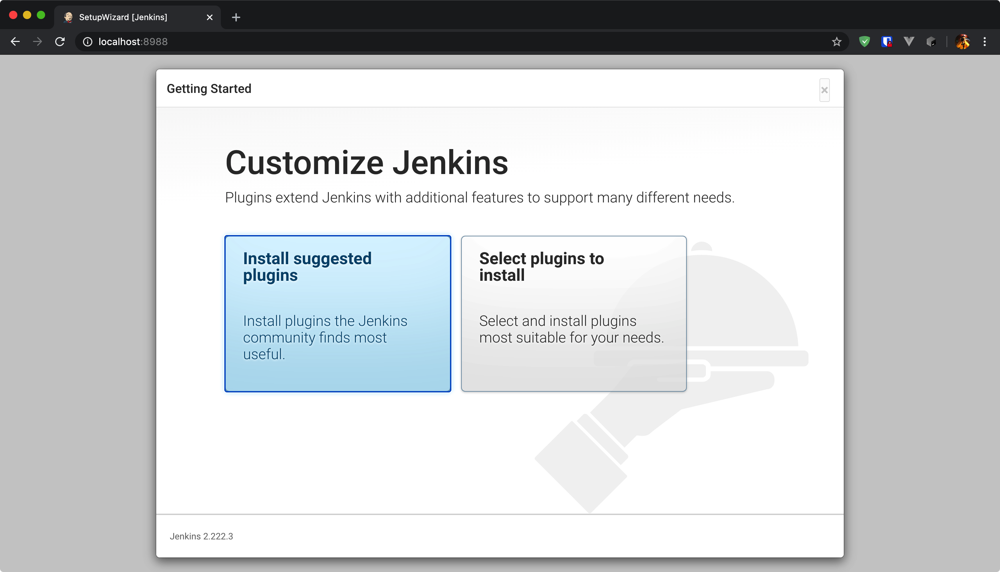
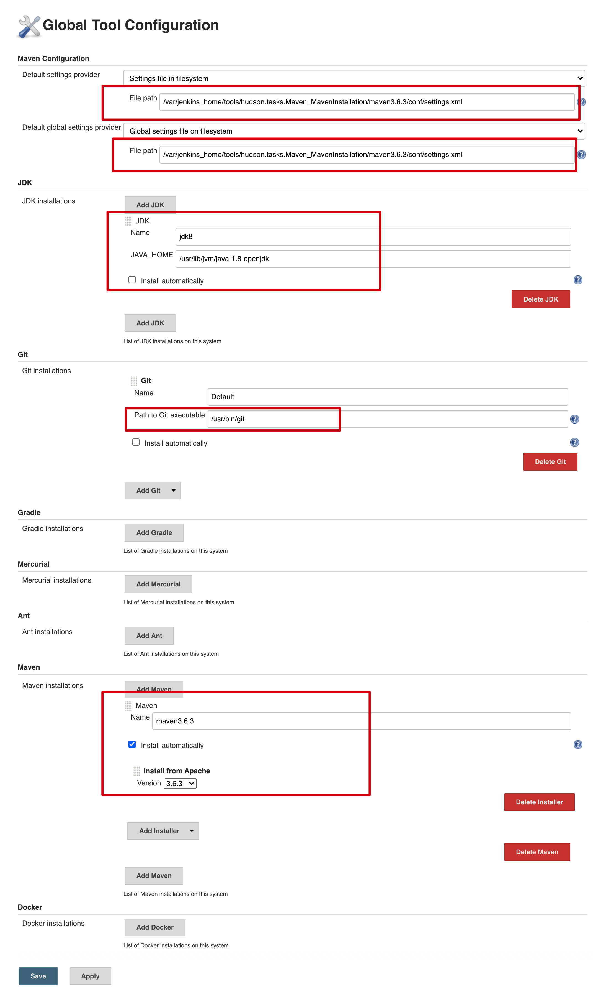
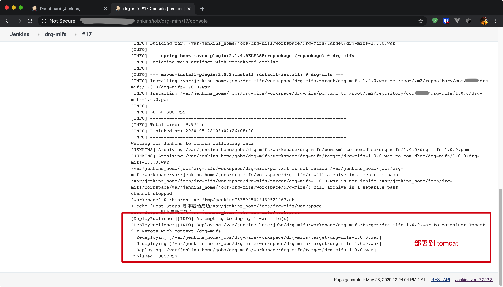

本方案基于开源 CI&CD 软件 Jenkins，完成对提交到 git 上的代码进行拉取、打包、发布的自动部署过程，便于系统开发中进行项目功能的测试及讨论。此方案重点在实施，故其中命令及参数使用不做详细解释，可自行搜索。
不足之处，敬请指正。
系统要求
最低推荐配置：
- 256MB可用内存
- 1GB可用磁盘空间(作为一个Docker容器运行jenkins的话推荐10GB)
为小团队推荐的硬件配置:
- 1GB+可用内存
- 50 GB+ 可用磁盘空间
软件配置:
- Java 8—无论是Java运行时环境（JRE）还是Java开发工具包（JDK）都可以。
注意: 如果将Jenkins作为Docker 容器运行，这不是必需的。
以上是Jenkins官方对系统配置的要求，为简化搭建过程，本方案采用Docker方式搭建。
各软件版本：
- macOS Catalina 10.15.4 (19E287)
- CentOS Linux release 7.8.2003 (Core)
- Docker version 19.03.8
- Apache tomcat 9.0.31
- Jenkins ver. 2.222.3
- JDK 1.8.0_212
- git version 2.20.4
- maven 3.6.3
Docker 安装
> MacOS
此版本提供桌面管理环境，有两种安装方式。建议下载 stable 版本，本方案采用方式一安装。
方式一：https://www.docker.com/get-started 下载 .dmg 文件，手动安装。
方式二：使用 Homebrew 包管理工具安装，
$ brew cask install docker。
安装完成后，运行如下窗口。
注：本人操作时未修改源，如需需修改源加速，请自行搜索。
> CentOS 7
卸载旧版本
1
2
3
4
5
6
7
8$ sudo yum remove docker \
docker-client \
docker-client-latest \
docker-common \
docker-latest \
docker-latest-logrotate \
docker-logrotate \
docker-engine安装前准备
1
2
3
4
5
6
7$ sudo yum update
$ sudo yum install -y yum-utils \
device-mapper-persistent-data \
lvm2
$ sudo yum-config-manager \
--add-repo \
https://download.docker.com/linux/centos/docker-ce.repo安装 Docker
1
2$ sudo yum update
$ sudo yum install docker-ce如果弹出 GPG key 的接收提示，请确认是否为
060a 61c5 1b55 8a7f 742b 77aa c52f eb6b 621e 9f35，如果是，可以接受并继续安装。至此，Docker 已经安装完成了，Docker 服务是没有启动的，操作系统里的 docker 组被创建，但是没有用户在这个组里。
注意：因本次采用root用户操作，默认有最高权限，故没有做docker用户操作；默认的docker组是没有用户的，如果需要使用，则需添加用户到docker组：
useradd -g docker -m docker启动 Docker
1
2
3
4
5
6
7
8## 开机启动
$ sudo systemctl enable docker
## 启动 docker 服务
$ sudo systemctl start docker
## 验证 Docker CE 安装是否正确
$ sudo docker run hello-world至此，Docker 启动完成，具体 docker 原理——镜像、容器、仓库、注册中心等内容及常用操作，不是本文重点，故不做赘述，但建议了解。
Jenkins
> 本地环境搭建（MacOS）
从 Docker Hub 拉取 jenkins 镜像
1 | $ docker run \ |
使用 run 命令运行镜像 jenkinsci/blueocean ，如果本地没有此镜像，则自动从 Docker Hub 拉取，完成后运行，其中参数在下一章节说明，不做赘述。
运行成功后，console 会打印一串代码，此为容器 jenkins 的 id。
Jenkins 自动化配置
使用 http://localhost:8988 访问 Jenkins 控制台。首次访问，需要输入密码
根据提示获取密码，此处有两种方式：
访问容器OS，通过提示地址获取密码：
36dab38746d94749acfac73d8a07bc291
2
3
4$ docker exec -it jenkins bash
bash-4.4# cat /var/jenkins_home/secrets/initialAdminPassword
36dab38746d94749acfac73d8a07bc29
bash-4.4#因为挂载了宿主机卷到 /var/jenkins_home，所以可以在 ~/Tools/docker/jenkins_data/secrets/initialAdminPassword 直接查看密码。
输入密码继续，根据提示完成初始化：
安装默认插件

创建管理员
设置 URL
此处可不设置
完成初始化

需要手工安装的插件：
- Maven Integration plugin：有了它在新建 Job 时才能有 Maven 项目可以选择
- Deploy to container Plugin：将 war 包部署到 tomcat
- Publish Over SSH：通过 ssh 推送文件，并可以执行 shell 命令
插件安装完成后最好重启一下jenkins，有几率jenkins会不生效，可以使用 http://localhost:8988/restart 重启。

全局工具配置
主要是设置容器 jenkins 使用的 jdk / maven / git
此处截图为已经配置好的配置

新建 Maven 项目
因为已经存在，所以有警告提示。
进入创建好的 maven 项目，进行配置。此处项目已经配置好，直接查看配置。
其中 git 和 tomcat 需要配置凭证：
git 凭证即为公私钥配置，在容器 bash 中使用 ssh-keygen 生成公私钥，并将公钥配置到 git 私服，然后将私钥、用户名等信息配置到 jenkins 凭证中。
推送 war 包到 tomcat 需要添加如下 action。
此处我已经添加了，所以为灰色不可选状态。
tomcat 需要有 manager 权限，并开启远程访问，应可以使用 Tomcat URL 里面的地址及用户名/密码访问 tomcat 控制台，具体操作此处不做赘述，请自行搜索。
使用 Username with password 配置 tomcat 的用户名/密码。
项目部署
首先启动用户部署的 tomcat，然后可以等待自动触发或者直接手动触发。
部署过程中会产生正在进行部署的日志，可点击进入查看。此处查看最近一次已经部署完成的日志。

至此自动化部署完成，可以通过 http://tomcat-url/drg-mifs 访问部署成功的项目。
以上为本地搭建的自动化部署过程，借此可将git仓库的代码拉到本地、打包，发布到本地/远程 tomcat 服务器；考虑到 jenkins 要完成自动化部署，需要24小时保持启动，故 jenkins 最好部署到专用服务器上。可将上述过程移植到远程服务器上进行，在实际操作中，为了保留已经配置好的内容，比如 .m2 数据、.ssh数据等，将基于 jenkinsci/blueocean 镜像配置的容器，生成新的镜像 mojitoming/auto-deploy-drg_mifs:v1 推到 Docker Hub 仓库，然后从远程服务器上拉取运行此镜像。下一章节将介绍在北京服务器134上部署上述镜像。
> CentOS 7 运行 Jenkins 镜像
部署过程中踩的坑
采用之前提到的 docker run 命令运行镜像 mojitoming/auto-deploy-drg_mifs:v1，镜像启动成功后，无法访问 jenkins 的管理页面，curl jenkins 的地址会报找不到主机路由。针对这个问题找了很多资料，配置了防火墙、虚拟网卡docker0、nmcli配置等，均不起作用，因对 CentOS 7 了解有限，故暂时放弃解决此问题，采用迂回方式处理此问题。
docker 有四种网络模式。docker run 如果不指定 –net 参数，模式为 bridge 模式，此模式将容器内的网络映射到宿主机网络，即端口映射。此处改用 host 网络模式启动镜像，host 模式容器会共享宿主机网络，直接使用宿主机端口。
镜像启动及参数解释
使用的命令如下：
1 | ## active |
- 增加参数 –net=host 指定网络模式。
- -v 为挂载宿主机卷映射到容器目录，此处将本地环境搭建时挂载的卷，打包上传到134，形成 /usr/local/docker/jenkins-data 并映射到 /var/jenkins_home 这样做的意义在于，可以把本地搭建时配置的所有设置都迁移过来，只需要运行镜像就可以。也可以不使用此参数，直接将配置写入镜像，此处建议使用此参数的意义在于：目录 /var/jenkins_home 下存放的是 jenkins 所有项目数据，可以直接在宿主机上通过 /usr/local/docker/jenkins-data 访问 /var/jenkins_home，而不需求进入容器OS；也便于迁移供其他容器使用。
- -e JENKINS_OPTS=”–prefix=/jenkins –httpPort=8988” 参数非常重要，–prefix 配置访问 jenkins 控制台 URL 增加一级路径，即http://xxx.xxx.xxx.134:8988/jenkins ，使用 nginx 代理 url 的时候，因为 / 已经被占用，而如果直接用 /jenkins 代理 http://xxx.xxx.xxx.134:8988 的话，/jenkins 会被解析为参数，导致无法访问，所以必须配置 –prefix；–httpPort 实现的是类似 -p 8988:8080 的作用，jenkins 默认的端口为 8080，此参数的意义是修改 jekins 的容器内启动端口。
- -d 为 daemon，即后台运行。
- –rm 为 docker stop jenkins 后，删除此容器。
–name 为此容器指定别名 jenkins，否则只能通过 ID，标识此容器。
因为环境原因，只能通过 nginx 暴露的 8000 端口，代理 jenkins，所以配置 nginx 代理 /jenkins => http://xxx.xxx.xxx.134:8988/jenkins 。
设置时区和时间
此镜像内 OS （Alpine Linux 3.9）默认采用的是 UTC 时间，所以需要修改一下时区：
1
2
3
4
5$ docker exec -it jenkins bash
bash-4.4# cp /usr/share/zoneinfo/Asia/Shanghai /etc/localtime
bash-4.4# echo Asia/Shanghai > /etc/timezone
## 重启 jenkins
http://114.242.246.231:8988/jenkins/restart至此在134服务器上配置完成，可通过 http://xxx.xxx.xxx.xxx:8000/jenkins 访问控制台管理项目，实现 CI & CD。